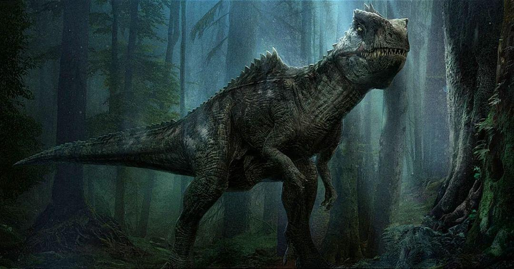

Découvrez le puissants Giganotosaure qui a marqué la fin du film Jurassic World.

Un Giganotosaurus fut cloné par Biosyn et vivait dans leur vallée. Le Giganotosaurus avait de grandes crêtes allant du haut de son front et jusqu'à la moitié du crâne. Sur son dos se trouvait une rangée d'épines, s'étendant de son cou à son dos. Les dents de l'animal ressemblent à celles d'un crocodile et sortent inégalement de sa gueule. La peau du Giganotosaurus est d'un brun foncé, avec des marques noires sur la tête et des rayures noires sur le dos. Le Giganotosaurus mesurait 12,8 mètres de long et 4,5 mètres de haut. À un moment donné, une puce fut insérée dans son cerveau, ce qui permettait à Biosyn de le contrôler en cas de besoin.